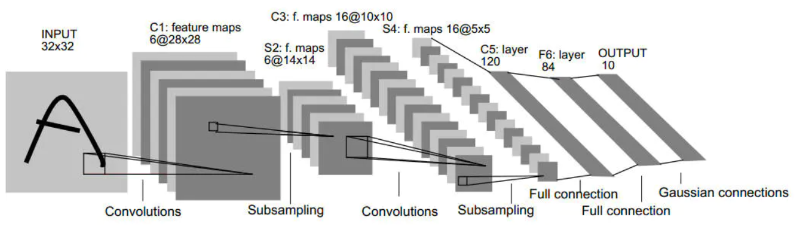
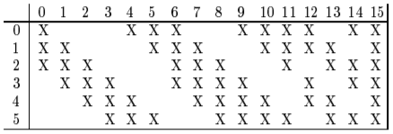

概述
LeNet-5又被成为LetNet，诞生于1998年，是第一个典型的卷积神经网络。LeNet共包含七层（不含输入层），每一层都包含可训练参数。网络结构大致为：输入-卷积-池化-卷积-池化-卷积-全连接-全连接。而如果将卷积和池化看作一层，则整个网络正好有五层。
论文：Gradient-based learning applied to document recognition
网络详解

说明：C表示卷积层，S表示下采样层（池化层），F表示全连接层，数字表示该层在整个网络中位于第几层。
INPUT层-输入层
输入图片尺寸为(32, 32, 1)，这个尺寸比数据集中最大的字符都要大，原因是后面的两次卷积是valid方式（pad=0），所以经过两次卷积后的特征图上的所有像素对应初始输入图片的一系列感受野的中心只有20×20大小的区域。上面是论文中的说法，具体的操作方法是：将小图片通过类似于padding的方式变成32×32图片（具体怎么变成32×32这个尺寸论文中并未提及，直接padding是我认为最合理的方式，用以应对卷积层的边界效应），然后进行标准化，送入后面的卷积层。
C1层-卷积层
- 输入：(32, 32, 1)
- 输出：(28, 28, 6)
- 卷积核大小：(5, 5)
- 卷积核个数：6
- 步长：1
- padding: valid
- 参数量：(5 × 5 + 1) × 6 = 156
S2层-池化层（下采样层）
- 输入：(28, 28, 6)
- 输入：(14, 14, 6)
- 池化窗口：(2, 2)
- 池化方式：将2×2窗口四个数字相加，乘以权重，加上偏置，最后使用sigmoid函数激活。
- 参数量：(1 + 1) × 6 = 12
C3层-卷积层
-
输入：(14, 14, 6)
-
输出：(10, 10, 16)
-
卷积核大小：(5, 5)
-
卷积核个数：6, 6, 3, 1
-
步长：1
-
padding: valid
-
卷积方式：本层的卷积方式比较特殊，输入的特征图（即S2的输出，后面用S2作为简写）共有6个特征层，输出的特征图共有16个特征层。前6个特征层以S2连续的3个特征层作为输入，接下来6个特征层以S2连续的4个特征层作为输入，再往后的3个特征层以S2的不连续的4个特征层作为输入，最后的1个特征层以S2的连续的6个特征层（即S2所有特征层）作为输入。上述描述比较抽象，看下面的图，行表头表示输入的层（共有6层），列表头表示输出的特征层（共有16层），第0个输出特征层以第0, 1, 2个输入特征层作为输入，进行卷积；第11个输出特征层以第0, 1, 4, 5个输入特征层作为输入进行卷积。

- 参数量：(5 × 5 × 3 +1) × 6 + (5 × 5 × 4 + 1) × 6 + (5 × 5 × 4 + 1) × 3 + (5 × 5 × 6 + 1) × 1 = 456 + 606 + 303 + 151 = 1516
S4层-池化层（下采样层）
- 输入：(10, 10, 16)
- 输出：(5, 5, 16)
- 池化窗口：(2, 2)
- 激活函数：sigmoid
- 池化方式：与C2相同，将2×2窗口四个数字相加，乘以权重，加上偏置。
- 参数量：(1 + 1) × 16 = 32
C5-卷积层
- 输入：(5, 5, 16)
- 输出：(1, 1, 120)
- 卷积核大小：(5, 5)
- 卷积核个数：120
- 步长：1
- padding: valid
- 卷积方式：正常卷积方式，但是这里的卷积核宽、高正好与输入的宽、高相同，所以起到了和全连接层等同的作用。
- 参数量：(5 × 5 × 16 + 1) × 120 = 48120
F6层-全连接层
- 输入：120
- 输出：84
- 参数量：(120 + 1) × 84 = 10164
- 激活函数：使用sigmoid激活函数。
输出层-全连接层
输出层使用的也是全连接的方式，共有10个节点，代表0~9，节点值与0越接近，则其对应数字的得分越高。10个节点值的计算方法并不是正常全连接层的输入乘以权重再加上偏置，而是使用径向基函数（RBF）的方式，计算公式为：
上式表示第个输出，表示第个输入，选择与0距离最近的yi对应的i值作为最终预测结果。
附录
最后分享一个看起来比较直观的LeNet可视化项目。